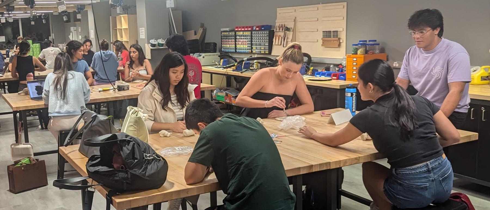

The semester
In teaching order. Every card opens the workshop's page — the deck, the plan and what is due are all there.

Week 2 · Thu, Sep 17
Ideation and Prototyping
Design, build, and program a robot that moves as many balls as possible across the finish line in 5 minutes.

Week 3 · Thu, Sep 24
From Physical to Digital: 2D
Six steps from sketch to race — Class 3 is step two. Today the design becomes a real, cut part.

Week 4 · Thu, Oct 1
From Physical to Digital: 3D
Six steps from sketch to race — Class 4 is step three. Today we 3D print the custom parts.

Week 5 · Thu, Oct 8
Basic Electronics and Microcontrollers
Seven weeks from sketch to race day. Today is WK4 — Electronics: wire motors, sensors, and controls, then program basic movements with MicroPython and AI.

Week 6 · Thu, Oct 15
AI Coding Agents
Before we go wireless — the three things you should have from last class.

Week 8 · Thu, Oct 29
Robo Challenge and Final Project Kickoff
Class 8 is the finish line for the first module: a working robot, a full scoreboard, and the awards.

Week 9 · Thu, Nov 5
Final Project Kickoff
The race is over — robots built from scratch, a full scoreboard, and awards. One last piece of admin before the final project begins.
Week 10 · Thu, Nov 12
Sensing and Visualization
Class 10 opens with the pitches from last week's brainstorming — five minutes per team.

Week 11 · Thu, Nov 19
Making Devices Smart with AI
Adding AI to a device to do smart things — no programming required. Your board asks a service for data or an action, and gets an answer back.

Week 12 · Thu, Dec 3
Final Project Making Time
Workshop time goes fast. Come in with a list and leave with a working prototype.

Week 13 · Thu, Dec 10
Final Project Showcase
Final presentations and live product demos, open to the public — friends, family, and the wider Tufts community are welcome.
How a workshop runs. We meet in the classroom for the first half to introduce
the skill, then move to Nolop to use it. The syllabus has
the learning outcomes, grading and policies; the
maker skills tasks are where you get each skill signed off.